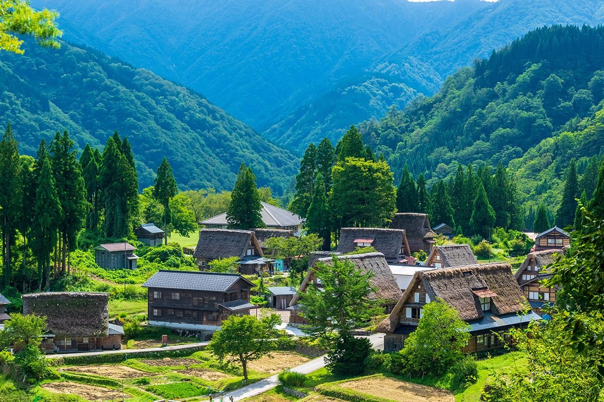
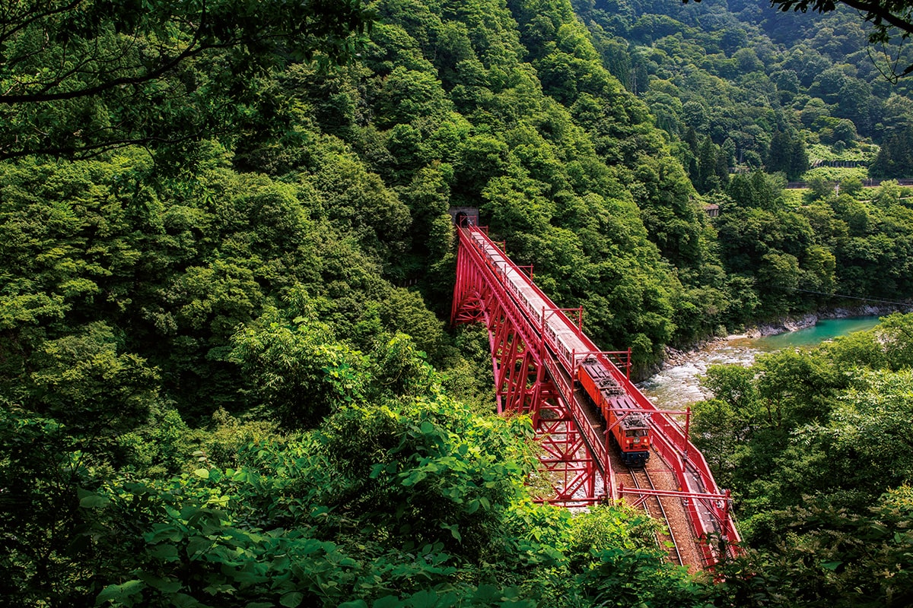
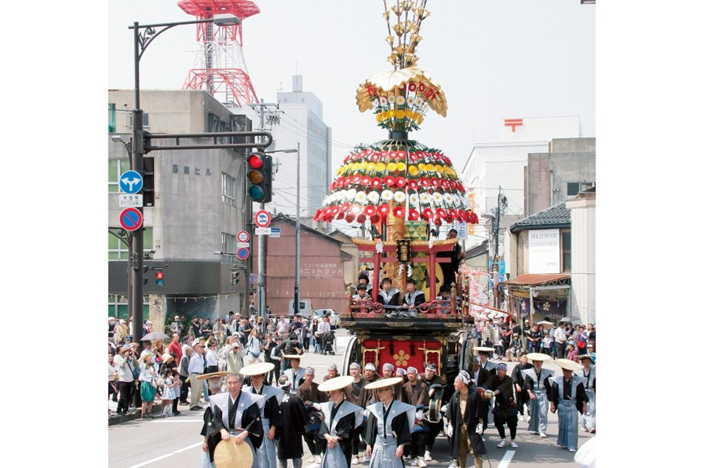
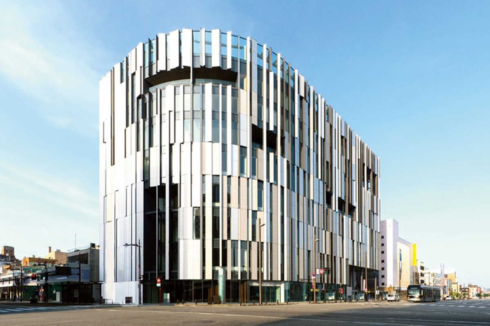
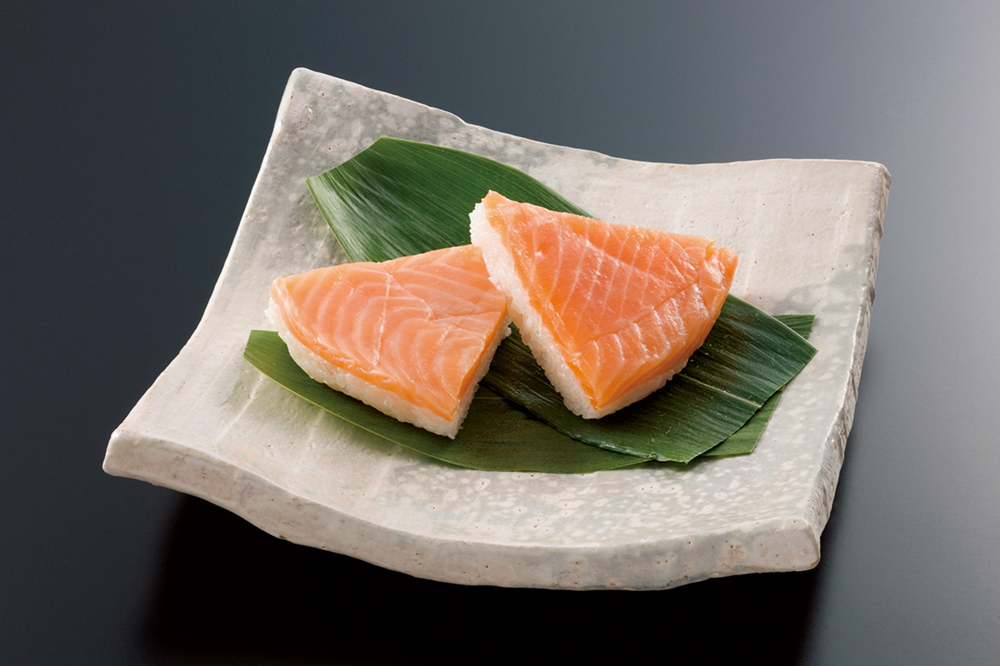
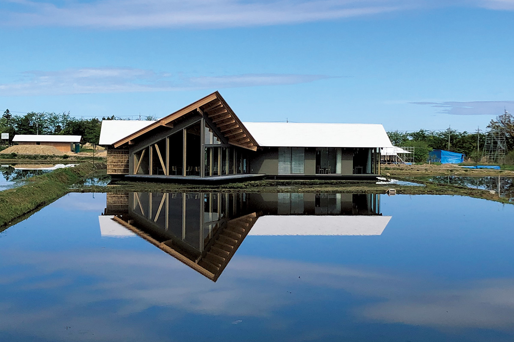
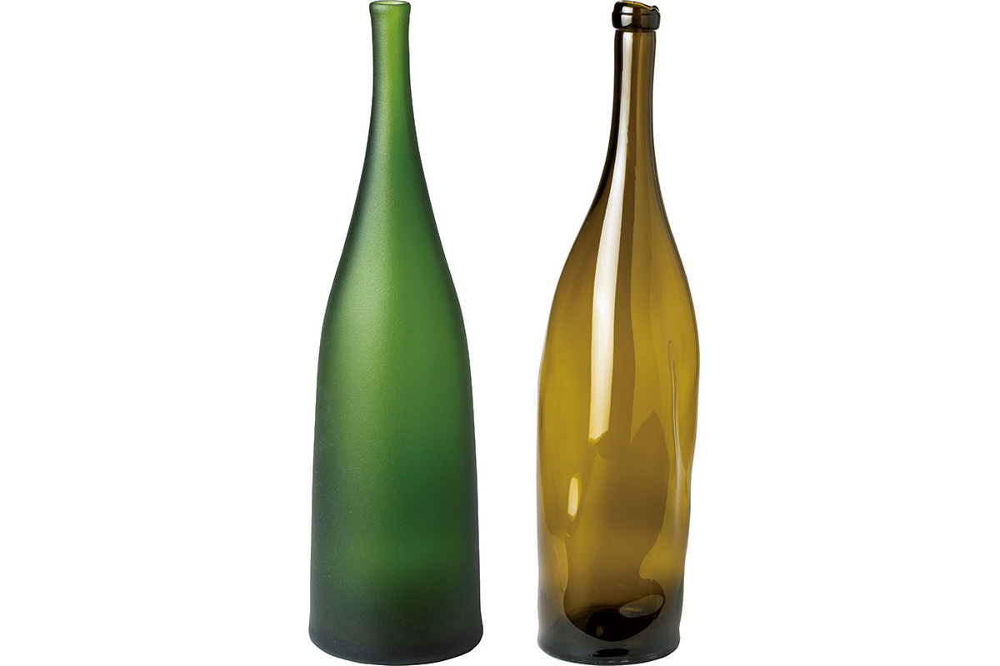
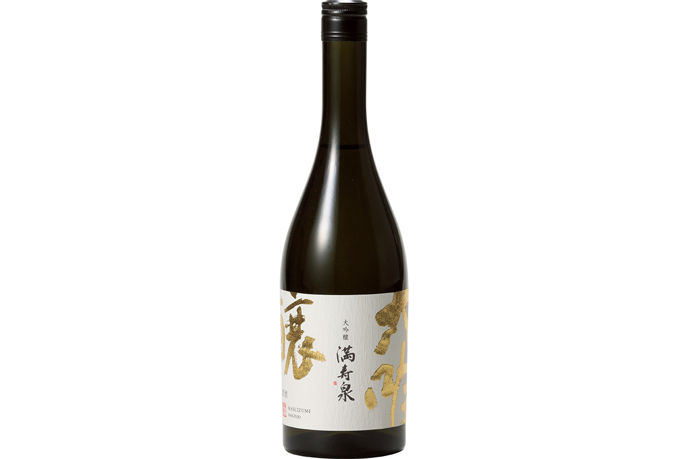
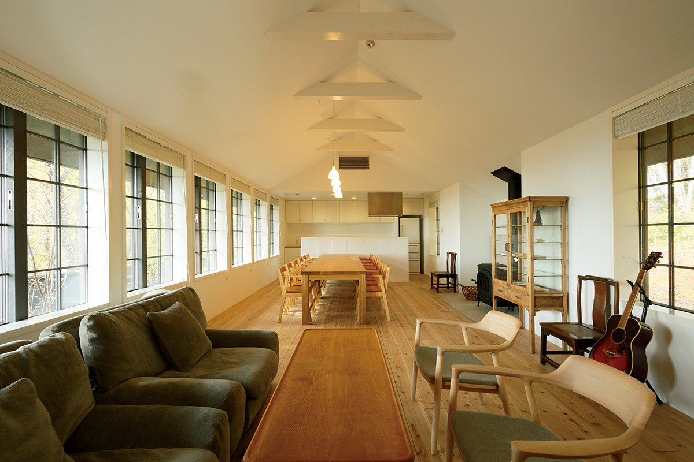

Префектура Тояма
Тояма: королевство воды у подножия гор

Дома под очень крутыми соломенными крышами стоят среди террас полей и лесистых гор
Три тысячи метров над морем, ущелье в форме буквы V, вагонетка вдоль реки и рыба, которой гордится залив. Рассказываем, за чем ехать в префектуру Тояма, которую называют королевством воды.
О префектуре
Королевство воды у подножия гор
В старину эти земли делили на три области: Этидзэн, Эттю и Этиго, а потом от Эттю отделилась Ното, то есть нынешняя Тояма. Префектура прижата к морю хребтом Татэяма с вершинами выше трёх тысяч метров, а между горами и заливом лежит равнина. Здесь есть ущелье Куробэ, одно из самых глубоких ущелий страны в форме буквы V, заболоченное плато Мидагахара, которое охраняет Рамсарская конвенция, то есть международное соглашение о водно-болотных угодьях, и ледники, впервые в Японии получившие официальное признание.
В заливе Тояма, который называют природным садком, рыбаки ставят сети-ловушки, и улов богат: зимой здесь берут желтохвоста, а ещё белую креветку и светящегося кальмара. Традиция торговцев лекарствами из Эттю жива до сих пор: префектура по-прежнему делает и продаёт лекарства, и эта отрасль держит её экономику.
Эмблема префектуры повторяет очертания горы Татэяма, а в середине помещён первый слог названия префектуры.
Что посмотреть
Поезд, который идёт вдоль ущелья
Железная дорога ущелья Куробэ, вагонетка-троллейбус
Дорога длиной 20,1 километра занимает 80 минут. За это время поезд проходит над рекой у моста высотой 60 метров, а на станции Канэцури, где на берегу бьют горячие источники, напротив через воду видно нерастаявший снег.

- Справки
- центр продаж железной дороги ущелья Куробэ
- Телефон
- +81 765-62-1011
Что ещё посмотреть
- Маршрут Татэяма Куробэ через горы с высокогорной дорогой
- Берег Амахараси, откуда открывается вид на залив и хребет
- Деревни Гокаямы с домами под крутыми соломенными крышами
Праздники
Семь повозок, которые съезжаются вместе
Праздник повозок в Такаоке
Семь повозок украшают техниками местных ремёсел, которыми славится Такаока, и в каждом квартале свою повозку наряжают заново. После обряда очищения повозки объезжают улицы, а затем выстраиваются все вместе. Праздник признан важным культурным достоянием страны, и материальным, и нематериальным.

- Когда
- ежегодно 1 мая
- Место
- кварталы Ямамати-судзи и Катахарамати, город Такаока, префектура Тояма
Другие праздники
- Фестиваль тюльпанов в Тонами, когда поля превращаются в разноцветные полосы
- Праздник татэмон с высокими шестами и фонарями
- Праздник ветра в Этиго-Яцуо с народными танцами под музыку
Музеи и архитектура
Здание, которое сверкает на солнце
ТОЯМА Кирари
Комплекс построил архитектор Кэнго Кума, и в нём работают городской музей стекла и другие учреждения. Стекло и алюминий на фасаде отражают свет под разными углами, поэтому здание и правда сверкает.

- Адрес
- 5-1 Nishimachi, Toyama, Toyama
- Телефон
- +81 76-461-3100 (городской музей стекла)
Что ещё посмотреть
- Художественный музей префектуры Тояма
- Литературный музей Коси-но куни
- Художественный музей города Такаока
Местная кухня
Форель в деревянной кадке
Масу-суши
Кусочки подсоленной форели укладывают на листья саса, то есть бамбуковой травы, которыми выстлан деревянный ящик, сверху идёт рис с уксусом, и всё это прижимают и заворачивают в те же листья.

Что ещё попробовать
- Суши из рыбы залива Тояма
- Тушёный желтохвост с редькой дайкон
- Тонко нарезанный желтохвост, который окунают в горячий бульон
Где поесть
Ресторан на ферме пряных трав
healthian-wood
Хозяйство открылось в марте 2020 года. В зале «The Kitchen» подают обед с пряными травами, которые здесь же и выращивают, а в «The Table» гостей ждёт полноценный сет из нескольких блюд.

- Адрес
- 57-1 Nakaagano, Tateyama, Nakaniikawa, Toyama
- Телефон
- +81 76-482-2536
- Часы
- The Kitchen с 11:00 до 15:00 (последний заказ в 14:00), The Table с 12:00 и с 18:00
- Бронь
- не позднее трёх дней до визита: обед между 12:00 и 13:00, ужин между 18:00 и 19:00
- Выходные
- среда и третий вторник месяца
Ремёсла
Стеклянные бутыли как объекты искусства
Работы Киноситы Такары
Мастер работает в Тояме, и его вещи отличает простая и ясная форма. Серия родилась после знакомства с фермой Сэйз, где нашлись и место, и тема для работы.

- Справки
- Simpleglass
Что привезти
Бутылка сакэ из Тоямы
Дайгиндзё «Масуидзуми» от сакеварни Масуда
Во вкусе этого сакэ разворачивается насыщенная основа, а следом приходит лёгкая сладость спелого фрукта.

- Цена
- 2970 иен за 720 мл
- Телефон
- +81 76-437-9916
- Сайт
- masuizumi.co.jp
Где остановиться
Дом на холме среди полей
Сэйз Фарм
Гостевой дом стоит на небольшом холме рядом с винодельней, и его сдают целиком, как дачу, на сутки. На территории есть ферма, ресторан и магазин.

- Адрес
- 238 Kitayama, Yogawa, Himi, Toyama
- Телефон
- +81 766-72-8288
- Номеров
- один дом с тремя спальнями, в день принимают только одну группу
- Цена
- от 35 200 иен за сутки (цена за один дом при размещении двух гостей, сервисный сбор включён, налог отдельно)
Местный диалект
Как здесь хвалят еду и благодарят за покупку
- Нантю умай гакээНу очень вкусно
- Ицумо дэкай токо тэморотэ, кино доку на нээСпасибо, что всегда у нас много покупаете
- Иттэнса дэ макэтатя, хагаясии но!Проиграли с разницей в одно очко, как обидно!
Рекорды
Первые в стране по тюльпанам, домам и плотине
- №1 по отгрузке луковиц тюльпанов
- №1 по доле собственного жилья
- №1 по высоте плотины: это плотина Куробэ
Вопросы и ответы
Два вопроса о Тояме
Какой морской деликатес называют драгоценностью залива Тояма?
Белую креветку, сироэби. Она живёт только в заливе Тояма, вырастает от 5 до 8 сантиметров, а цвет у неё прозрачный, с нежным розовым отливом. Плотный, благородно сладкий вкус и тающая текстура сделали её очень популярной.
Сколько лет строили плотину Куробэ?
Семь лет. Работы начались в 1956 году, то есть в 31-й год эпохи Сёва, и на стройку ушло 51,3 млрд иен по деньгам того времени. О том, как тяжело дался этот проект, рассказывает фильм «Куробэ-но тайё», название которого переводится как «Солнце Куробэ».
Справочник
Тояма в цифрах
Общие данные
| Административный центр | Тояма |
| Муниципалитеты | 10 городов, 4 посёлка и 1 село |
| Площадь | 4248 км² |
| Население | 1,05 млн человек |
| Плотность населения | 247,2 чел./км² |
| Туристов в год | 6,06 млн |
| Символ-дерево | кедр татэяма-суги |
| Символ-цветок | тюльпан |
| Символ-птица | белая куропатка |
Климат
| Средняя годовая температура | 15,0 °C |
| Средний максимум | 32,8 °C |
| Средний минимум | -1,0 °C |
| Осадки | 2751 мм в год |
| Ясных дней | 16 |
| Дней с осадками | 179 |
| Дней со снегом | 64 |
Для путешественника
| Горячих источников | 71 |
| Отелей и рёканов | 426 |
| Художественных музеев | 27 |
| Музеев | 78 |
| Придорожных станций митиноэки | 15 |
| Объектов культурного наследия | 49, из них 1 национальное сокровище |
| Национальные сокровища | храм Дзуйрюдзи |
| Исторических памятников | 21 |
| Живописных мест | 3 |
| Памятников природы | 22 |
| Всемирное наследие | деревни с домами под соломенными крышами в Гокаяме |
| Национальные и квазинациональные парки | Тюбу Сангаку, Хакусан, полуостров Ното, всего 3 |
Природные памятники
Морская гладь, где собираются светящиеся кальмары, водопад Сёмё, каровые склоны горы Якуси, ущелье Куробэ с обрывами Саруби и Окуканэяма, затопленный лес в Уодзу и другие.